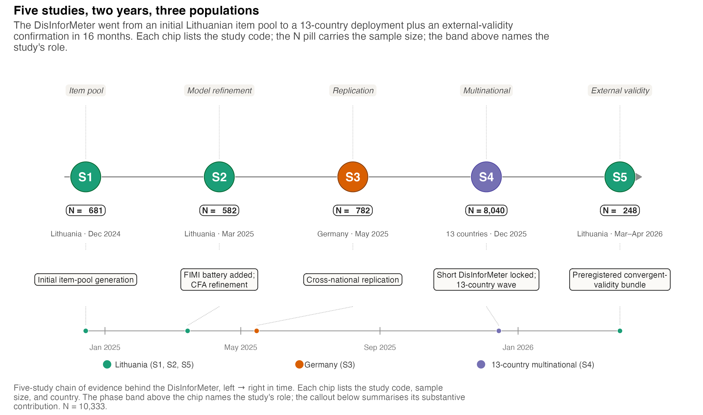
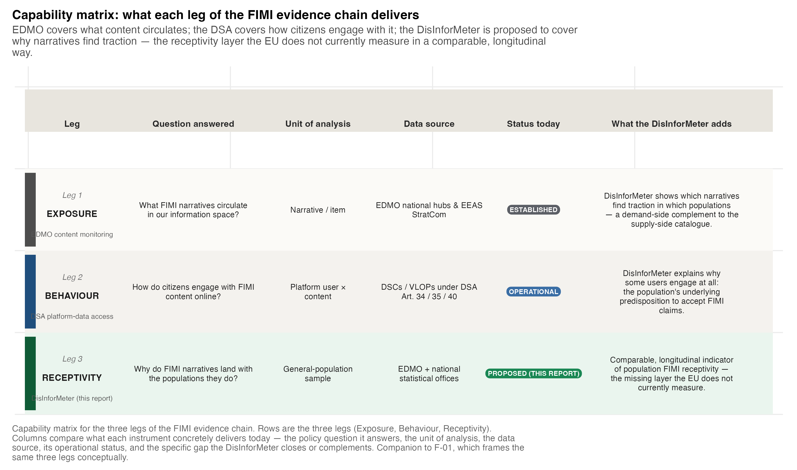
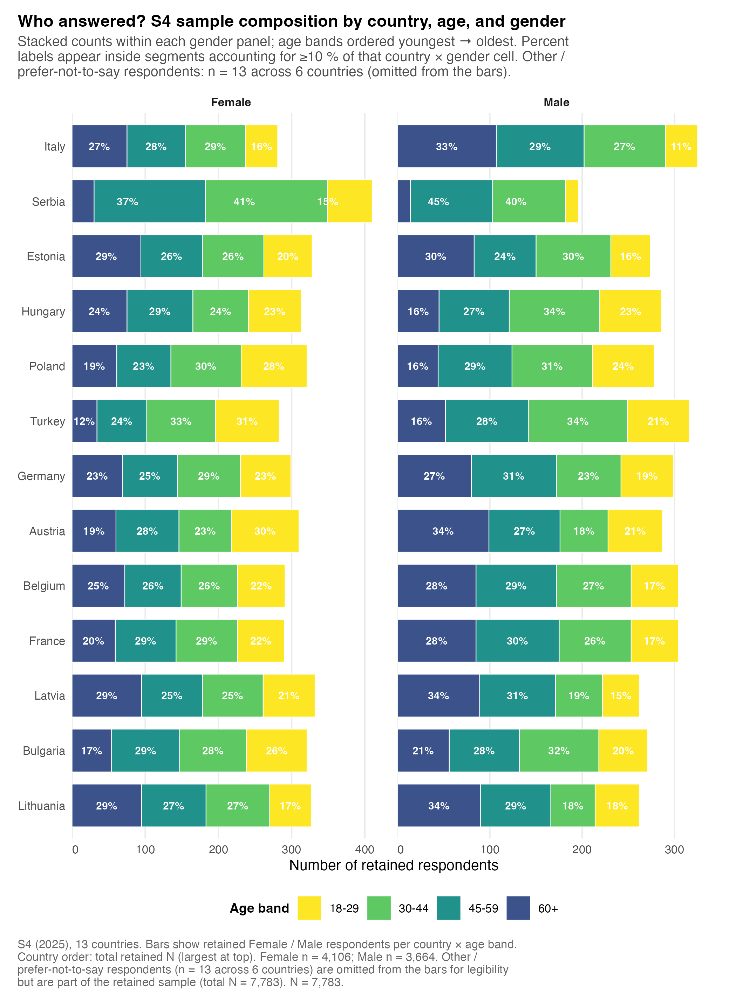
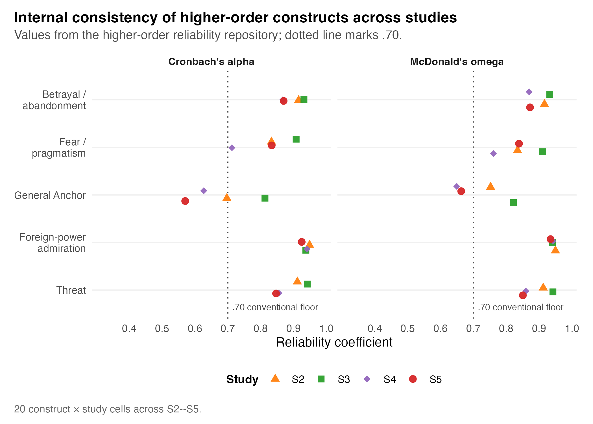
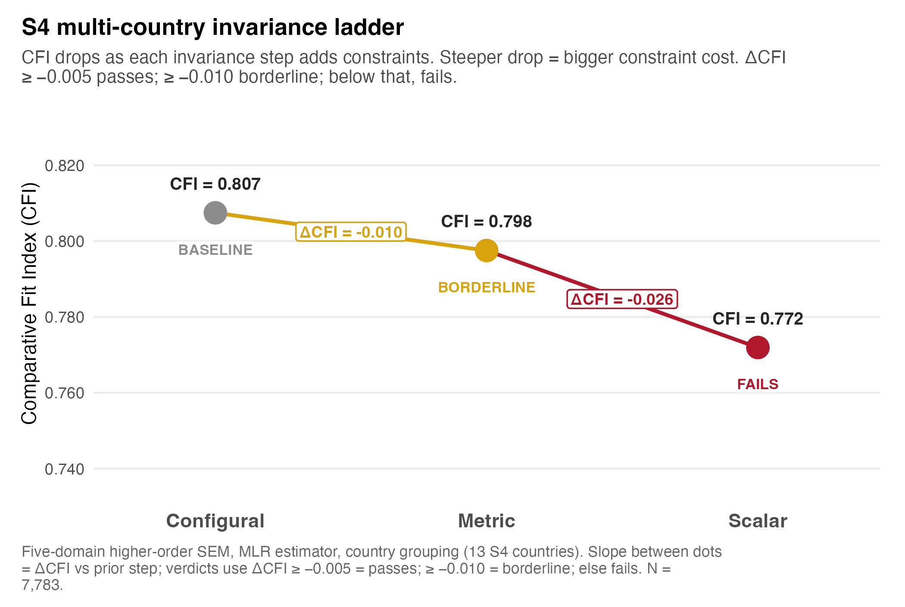

Study chain & measurement quality
The five-study evidence chain, sample composition, reliability, measurement comparability, and FIMI-variant diagnostics
The five-study evidence chain
Validation rests on a five-study chain: initial scale generation (S1), replication and refinement (S2, S3), multinational deployment (S4), and external validation (S5). The chain is what lets the policy report combine substantive FIMI knowledge, psychometric selection, and deployment evidence rather than a face-valid item list.
| Study | Country / fielding | N | Main empirical role |
|---|---|---|---|
| S1 | Lithuania, Dec 2024 | 681 | Initial item-pool generation and scale construction; FIMI measured as sharing intent. |
| S2 | Lithuania, Mar 2025 | 582 | Model refinement and first full eight-item FIMI detection battery. |
| S3 | Germany, May 2025 | 782 | Cross-national replication of the S2 architecture. |
| S4 | 13 countries, Dec 2025 | 8,040 fielded; 7,783 in this report cut | Multinational deployment, country profiles, FIMI source variants, invariance ladder. |
| S5 | Lithuania, Mar–Apr 2026 | 248 | External validation against preregistered civic, affective, and validation-scale anchors. |
The full study-chain summary table (T-02) and the instrument-comparison table (T-01) are rendered below.
| Five studies, five empirical questions | ||||||
| Each row is one S1–S5 wave. The FIMI operationalisation and DisInforMeter version columns show how the instrument’s deployment changed between waves. | ||||||
| Study | Country | N | Date | FIMI operationalisation | DisInforMeter version | What was tested |
|---|---|---|---|---|---|---|
| S1 | Lithuania | 681 | Dec 2024 | 15-item formative pool | Full belief battery (formative) | Initial item-pool generation and scale construction. |
| S2 | Lithuania | 582 | Mar 2025 | Full FIMI (8 items: news1-8) | Full battery + higher-order composites | Model refinement; FIMI battery added; first-order ←→ higher-order architecture confirmed. |
| S3 | Germany | 782 | May 2025 | Full FIMI (8 items: news1-8) | Full battery + higher-order composites | Cross-national replication of S2 architecture. |
| S4 | 13 countries | 8,040 | Dec 2025 | Full / Russian-origin / Chinese-origin / Short | Short DisInforMeter (27 items) | Multinational deployment; country invariance ladder; FIMI prediction across countries. |
| S5 | Lithuania | 248 | Mar-Apr 2026 | Not deployed (external validity wave) | Short DisInforMeter (27 items) + extended battery | Preregistered external-validity bundle (CMQ, GCB, Eurobarometer-anchor scales). |
| Source: outputs/tables/scale_diagnostics_s1_s5.csv (N) plus per-study Quarto pages (dates / deployment metadata). N = 10,333. Reproduction code: scripts/policy_report/T-02_five_study_chain.R. | ||||||
Where DisInforMeter sits among other tools
The DisInforMeter is layered (five domains + a separate detection criterion), country-comparable, has a deployable short form, and is released under an open reuse licence — distinguishing it from flat misinformation-discernment or conspiracy scales.

| Where DisInforMeter sits in the wider misinformation-receptivity toolkit | |||||
| Comparison of structural design, country-comparability, brief-form availability, and licensing, based on published validation work for each instrument (see the glossary and source note). | |||||
| Instrument | What it measures | Layered or flat | Country-comparable | Brief form | Open licence |
|---|---|---|---|---|---|
| DisInforMeter (this report) | FIMI receptivity via five higher-order affective composites and 11 first-order beliefs | Layered (5 higher-order + 11 first-order) | Yes — metric invariance across 13 S4 countries; intercept-level caveats | Yes — 27-item Short DisInforMeter, ~90 s administration | Yes — CC-BY 4.0 |
| MIST (Misinformation Susceptibility Test) | Ability to discriminate real from fake news headlines | Flat (single accuracy score) | Partial — primarily English; limited translations | Yes — MIST-8 / MIST-16 short forms | Yes — CC-BY 4.0 |
| BSMD (Brief Scale of Misinformation Discernment) | Self-reported ability to detect misinformation | Flat | Limited cross-country evidence | Yes — by design (brief) | Yes — academic open use |
| CMQ (Conspiracy Mentality Questionnaire) | Generic conspiracy mentality (single-factor predisposition) | Flat (single factor) | Yes — validated in multiple European samples (Bruder et al. 2013) | Yes — 5-item short form | Yes — academic open use |
| GCB (Generic Conspiracist Beliefs scale) | Endorsement of conspiracist content across five sub-themes | Layered (15-item, 5 sub-themes) | Yes — translations exist; cross-country evidence variable | Yes — GCB-5 short form | Yes — open use under permission |
| Source: Author judgement based on published validation work for MIST (Maertens et al.), BSMD (Maertens & Roozenbeek), CMQ (Bruder et al. 2013), GCB (Brotherton et al. 2013); see Annex F glossary. Reproduction code: scripts/policy_report/T-01_scale_comparison.R. | |||||
S4 sample composition
The report cut uses near-600-respondent country samples across 13 countries.

| Annex C — S4 sample composition by country | ||||||
| Per-country N, age distribution, gender, education, and daily-media use. Cluster column matches the four-cluster grouping used in the radar figures (F-16, F-22..F-28). | ||||||
| Country | Cluster | N | Age (mean, SD, range) | Gender | Education | Daily media use |
|---|---|---|---|---|---|---|
| Austria | Western | 599 | M = 45.6 (SD = 16.5) [24, 67] | F 51.8% / M 47.9% | Tertiary 28.2% / Vocational 42.9% / Lower 28.9% | 7.7% |
| Belgium | Western | 595 | M = 46.4 (SD = 15.7) [24, 67] | F 48.9% / M 51.1% | Tertiary 45.0% / Vocational 13.8% / Lower 41.2% | 10.4% |
| Bulgaria | Central-East | 592 | M = 43.8 (SD = 15.1) [24, 67] | F 54.2% / M 45.8% | Tertiary 44.8% / Vocational 22.3% / Lower 32.9% | 8.6% |
| Germany | Western | 598 | M = 45.8 (SD = 15.8) [24, 67] | F 50.0% / M 50.0% | Tertiary 36.6% / Vocational 46.3% / Lower 17.1% | 8.9% |
| Estonia | Baltic | 604 | M = 47.1 (SD = 15.9) [24, 67] | F 54.3% / M 45.4% | Tertiary 37.1% / Vocational 19.7% / Lower 43.2% | 4.8% |
| France | Western | 596 | M = 46.0 (SD = 15.4) [24, 67] | F 48.7% / M 51.0% | Tertiary 40.8% / Vocational 26.5% / Lower 32.7% | 6.0% |
| Hungary | Central-East | 599 | M = 44.0 (SD = 15.4) [24, 67] | F 52.3% / M 47.7% | Tertiary 23.9% / Vocational 25.5% / Lower 50.6% | 5.8% |
| Italy | Southern | 606 | M = 48.6 (SD = 15.0) [24, 67] | F 46.4% / M 53.6% | Tertiary 36.0% / Vocational 13.7% / Lower 50.3% | 11.2% |
| Lithuania | Baltic | 593 | M = 48.1 (SD = 15.9) [24, 67] | F 55.1% / M 44.2% | Tertiary 50.1% / Vocational 27.5% / Lower 22.4% | 7.4% |
| Latvia | Baltic | 596 | M = 47.9 (SD = 16.0) [24, 67] | F 55.7% / M 44.0% | Tertiary 38.3% / Vocational 34.7% / Lower 27.0% | 3.2% |
| Poland | Central-East | 600 | M = 42.6 (SD = 15.3) [24, 67] | F 53.5% / M 46.3% | Tertiary 31.5% / Vocational 10.7% / Lower 57.8% | 11.2% |
| Serbia | Southern | 606 | M = 43.5 (SD = 11.6) [24, 67] | F 67.7% / M 32.3% | Tertiary 52.6% / Vocational 13.9% / Lower 33.5% | 7.6% |
| Turkey | Southern | 599 | M = 41.8 (SD = 14.6) [24, 67] | F 47.2% / M 52.8% | Tertiary 56.1% / Vocational 20.0% / Lower 23.9% | 27.4% |
| Source: outputs/policy_report/tables/s4_sample_composition_by_country.csv. N = 7,783. Reproduction code: scripts/policy_report/A-03_sample_composition_country.R. | ||||||
Reliability and AVE
Reliability is generally strong for the core receptivity constructs. Median internal-consistency across S2–S5 is high for Betrayal/Abandonment ((= .893), (= .894)), Foreign-Power Admiration ((= .939), (= .941)), and Threat ((= .884), (= .886)); acceptable for Fear/Pragmatism ((= .833), (= .836)); and more modest for the intentionally heterogeneous General Anchor ((= .662), (= .708)). Values above ~.70 are conventionally acceptable for group-level research and above .80 indicate strong reliability (Cronbach1951?; McDonald1999?).

| Annex D.1 — Reliability and AVE by construct and study | ||||||||
| Per (study × construct) row: number of items, sample size, Cronbach’s α, McDonald’s ω, average variance extracted (AVE), and the construct’s mean / SD on the response scale. | ||||||||
| Study | Construct | #items | N | α | ω | AVE | Mean | SD |
|---|---|---|---|---|---|---|---|---|
| S2 | ABAND | 3 | 582 | 0.796 | 0.798 | 0.565 | 3.80 | 1.67 |
| S3 | ABAND | 3 | 782 | 0.819 | 0.822 | 0.597 | 3.72 | 1.73 |
| S4 | ABAND | 3 | 8,040 | 0.757 | 0.761 | 0.510 | 4.43 | 1.55 |
| S5 | ABAND | 8 | 248 | 0.870 | 0.872 | 0.364 | 3.11 | 1.19 |
| S1 | FEAR | 2 | 681 | 0.793 | 0.795 | 0.659 | 4.03 | 2.05 |
| S5 | FEAR | 6 | 248 | 0.834 | 0.839 | 0.525 | 4.50 | 1.34 |
| S1 | FIMI | 15 | 681 | 0.930 | 0.932 | 0.478 | 2.72 | 1.42 |
| S2 | FIMI | 8 | 582 | 0.779 | 0.786 | 0.319 | 5.22 | 1.11 |
| S3 | FIMI | 8 | 782 | 0.548 | 0.559 | 0.144 | 4.64 | 0.89 |
| S4 | FIMI | 8 | 8,040 | 0.690 | 0.694 | 0.226 | 4.86 | 0.99 |
| S4 | GEN | 5 | 8,040 | 0.627 | 0.649 | 0.311 | 4.05 | 1.16 |
| S5 | GEN | 8 | 248 | 0.570 | 0.656 | 0.278 | 3.16 | 0.78 |
| S2 | SUPF | 3 | 582 | 0.939 | 0.940 | 0.841 | 1.92 | 1.53 |
| S3 | SUPF | 3 | 782 | 0.875 | 0.896 | 0.764 | 2.36 | 1.63 |
| S1 | THREAT | 2 | 681 | 0.802 | 0.802 | 0.669 | 3.91 | 2.08 |
| S2 | THREAT | 3 | 582 | 0.729 | 0.739 | 0.471 | 4.05 | 1.63 |
| S3 | THREAT | 3 | 782 | 0.753 | 0.759 | 0.519 | 3.35 | 1.67 |
| S4 | THREAT | 2 | 8,040 | 0.531 | 0.536 | 0.386 | 4.40 | 1.65 |
| S5 | THREAT | 12 | 248 | 0.847 | 0.850 | 0.318 | 3.49 | 1.15 |
| Source: outputs/tables/scale_diagnostics_s1_s5.csv. N = 10,085. Reproduction code: scripts/policy_report/A-04_reliability_ave.R. | ||||||||
Measurement comparability (invariance)
Country-level comparability meets the conventional threshold for metric invariance (()CFI criterion), so relationships, ranks, and profiles can be compared across countries with confidence. Evidence for scalar invariance is more limited, so absolute latent-mean comparisons are interpreted more cautiously (CheungRensvold2002?; Chen2007?).

| Ladder | Step | CFI | RMSEA | ΔCFI | Policy reading |
|---|---|---|---|---|---|
| S4 country-level, full SEM | Configural | .807 | .133 | – | Same broad structure across the 13 countries. |
| S4 country-level, full SEM | Metric | .798 | .131 | −.010 | Supports comparison of relationships, ranks, and profiles. |
| S4 country-level, full SEM | Scalar | .772 | .134 | −.026 | Weaker support; absolute latent means need caveats. |
| S4 language-level | Metric | .796 | .131 | −.011 | Near threshold; language comparisons need caution. |
The full invariance ladders (Annex D.2):
| Annex D.2 — Invariance ladders across S4 countries, S4 languages, S2-S3-S5 pooled, and the S2 ←→ S5 temporal contrast | |||||||||
| Configural → metric → scalar steps with ΔCFI and ΔRMSEA versus the previous step. ✓ = ΔCFI ≥ -0.010 (Cheung & Rensvold); ✗ = fails the threshold; — = baseline or test does not apply. | |||||||||
| Ladder | Construct | Step | CFI | TLI | RMSEA | SRMR | ΔCFI | ΔRMSEA | Passes |
|---|---|---|---|---|---|---|---|---|---|
| S4 country-level (full SEM, 13 countries) | NA | configural | 0.807 | 0.760 | 0.133 | 0.138 | — | — | ✓ |
| S4 country-level (full SEM, 13 countries) | NA | metric | 0.798 | 0.768 | 0.131 | 0.149 | −0.010 | −0.002 | ✓ |
| S4 country-level (full SEM, 13 countries) | NA | scalar | 0.772 | 0.758 | 0.134 | 0.152 | −0.026 | 0.003 | ✗ |
| S4 language-level (14 survey languages) | NA | configural | 0.807 | 0.759 | 0.133 | 0.138 | — | — | ✓ |
| S4 language-level (14 survey languages) | NA | metric | 0.796 | 0.765 | 0.131 | 0.149 | −0.011 | −0.002 | ✗ |
| S2-S3-S5 pooled higher-order | ABAND | configural -> metric | — | — | — | — | −0.005 | −0.024 | ✓ |
| S2-S3-S5 pooled higher-order | ABAND | metric -> scalar | — | — | — | — | −0.019 | −0.011 | ✗ |
| S2-S3-S5 pooled higher-order | ABAND | optimized configural -> optimized metric | — | — | — | — | 0.000 | −0.044 | ✓ |
| S2-S3-S5 pooled higher-order | FEAR | configural -> metric | — | — | — | — | −0.064 | −0.027 | ✗ |
| S2-S3-S5 pooled higher-order | FEAR | metric -> scalar | — | — | — | — | 0.058 | −0.068 | ✓ |
| S2-S3-S5 pooled higher-order | FEAR | optimized configural -> optimized metric | — | — | — | — | −0.004 | −0.026 | ✓ |
| S2-S3-S5 pooled higher-order | GEN | configural -> metric | — | — | — | — | 0.103 | −0.062 | ✓ |
| S2-S3-S5 pooled higher-order | GEN | metric -> scalar | — | — | — | — | −0.036 | −0.012 | ✗ |
| S2-S3-S5 pooled higher-order | GEN | optimized configural -> optimized metric | — | — | — | — | −0.002 | −0.095 | ✓ |
| S2-S3-S5 pooled higher-order | SUPF | configural -> metric | — | — | — | — | −0.013 | −0.024 | ✗ |
| S2-S3-S5 pooled higher-order | SUPF | metric -> scalar | — | — | — | — | −0.023 | −0.012 | ✗ |
| S2-S3-S5 pooled higher-order | SUPF | optimized configural -> optimized metric | — | — | — | — | −0.007 | −0.138 | ✓ |
| S2-S3-S5 pooled higher-order | THREAT | configural -> metric | — | — | — | — | −0.045 | 0.000 | ✗ |
| S2-S3-S5 pooled higher-order | THREAT | metric -> scalar | — | — | — | — | −0.036 | −0.002 | ✗ |
| S2-S3-S5 pooled higher-order | THREAT | optimized configural -> optimized metric | — | — | — | — | −0.001 | 0.007 | ✓ |
| S2 ←→ S5 Lithuania temporal | NA | configural | 0.849 | 0.774 | 0.138 | 0.116 | — | — | — |
| S2 ←→ S5 Lithuania temporal | NA | metric | 0.844 | 0.792 | 0.132 | 0.121 | −0.005 | −0.006 | — |
| S2 ←→ S5 Lithuania temporal | NA | scalar | 0.790 | 0.748 | 0.146 | 0.136 | −0.055 | 0.014 | — |
| Source: outputs/tables/s4_country_invariance.csv, outputs/tables/s4_language_invariance.csv, outputs/tables/higher_order_pooled_invariance_ladder_s2_s3_s5.csv, outputs/tables/s5_s2_invariance.csv. Reproduction code: scripts/policy_report/A-05_invariance_ladders.R. | |||||||||
NoteComparability caveat
Country comparisons in this supplement are strongest as profiles, ranks, and associations. Absolute latent-mean comparisons are reported where implemented, but always with the scalar-invariance caveat.
FIMI-variant diagnostics
The four FIMI operationalisations are intercorrelated but carry distinct information. Full FIMI (8 items) is the primary indicator; Russian-origin ((r = .914) with Full) is highly aligned but retains source-specific signal; Chinese-origin ((r = .750)) is distinct enough to expose the Chinese-origin blind spot; Short FIMI ((r = .890)) is a useful source-balanced sensitivity variant, not a replacement for the full battery.
| Annex E.4b — FIMI variant intercorrelations (S2, S4) | |||||
| Pairwise Pearson r between FIMI operationalisations within each study. | |||||
| Study | Variant | Full | Russian | Chinese | Short |
|---|---|---|---|---|---|
| S2 | Chinese | 0.789 | 0.476 | 1.000 | 0.765 |
| S2 | Full | 1.000 | 0.916 | 0.789 | 0.927 |
| S2 | Russian | 0.916 | 1.000 | 0.476 | 0.827 |
| S2 | Short | 0.927 | 0.827 | 0.765 | 1.000 |
| S3 | Chinese | 0.729 | 0.303 | 1.000 | 0.699 |
| S3 | Full | 1.000 | 0.873 | 0.729 | 0.860 |
| S3 | Russian | 0.873 | 1.000 | 0.303 | 0.699 |
| S3 | Short | 0.860 | 0.699 | 0.699 | 1.000 |
| S4 | Chinese | 0.750 | 0.417 | 1.000 | 0.721 |
| S4 | Full | 1.000 | 0.914 | 0.750 | 0.890 |
| S4 | Russian | 0.914 | 1.000 | 0.417 | 0.781 |
| S4 | Short | 0.890 | 0.781 | 0.721 | 1.000 |
| Source: outputs/tables/fimi_s2_s4_version_reliability.csv (top) and outputs/tables/fimi_s2_s4_version_correlations.csv (bottom). Reproduction code: scripts/policy_report/A-09_fimi_variant_diagnostics.R. | |||||